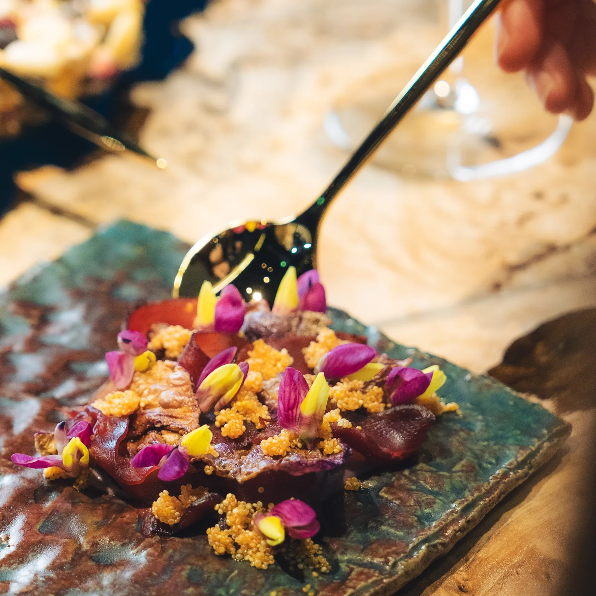

餐后另有安排的夜晚
精简套餐
共5章 · 餐桌席 · 1–8位
应“餐后另有安排”“想以品酒为主”的心声，特意止于八分饱的共5章。可作 ETHICA 之旅的序章。
14,800含税
查看空位

银座 ETHICA｜米其林二星 MAZ 出身主厨的创新料理（超越传统与国界，以自由的构想与技艺诞生的全新美食体验）· 连续3年入选《东京米其林指南》

Philosophy

菜单上没有菜名，只有“地球诞生”“恐龙时代与大灭绝”这样的时代名称。上桌之前，无从知晓会是什么。地球初生时的风景，各个文明孕育的智慧、技法与香料，经现代技术重新演绎，织成一个完整的故事。愿这几个小时，成为超越用餐的记忆，长留心间。
将时空的片段凝于一盘，化作触动五感的旅程。
Cenote
古代中南美洲文明的圣泉“天然井（Cenote）”，蓦然现身银座。
大地越深，地层越古老。天然井的水底，至今仍沉睡着冰河时期形成的钟乳石。
蓝色餐桌便是那片水面。每一道菜，潜至不同时代的深处：第1道是38亿年前的海洋；第3道抵达最深的46亿年前。随后上浮，最后再度深潜，是一场共8章的旅程。
水面＝当下的银座咖啡 · 红茶
第1道，38亿年前
从相传孕育了最初生命的深海热泉出发。旅程以秋季洄游鲣鱼开篇。
第5道，2亿年前
恐龙的时代，及其终结。一道肥美的马鲛鱼料理。
第7道，500年前
500年前，食材漂洋过海、往来交汇的时代，以温州蜜柑呈现。
以上节选 ETHICA 典藏 · 2026年秋季中的3个篇章。食材依季节与采购情况调整。
Innovative Plates
ETHICA 的料理，将地球的历史、文明与自然风景重新构筑为料理。
不止于美，更将味道的完成度放在首位。
为了抵达其精髓，我们珍视：
这三点是我们的坚持。


Executive Chef
行政主厨松苗，曾任职于米其林二星创新料理“MAZ”、一星中餐“虎峰”，并在日本料理、法国菜、意大利菜、西班牙菜等众多领域积累经验。他以独到的感性，融合在各类料理中磨炼出的技艺与味觉，始终将味道的完成度放在首位。凭借丰富的饮食经历带来的自由构想，他将地球的历史与古代文明的记忆，升华为独具创意的一道料理。
MASAO ANDRÉS MATSUNAE GUZMÁN
Culinary Philosophy

ETHICA 追求的，不是依赖高级食材或油脂的浓郁，而是认真对待每一种食材，将其潜在的可能性发挥到极致。
如同法国料理，以瓦片脆饼与脆片增添细腻口感，以泡沫（espuma）营造轻盈的入口即化。自由组合多种技法，在发挥食材个性的同时，追求味道的完成度。
一般的料理，多是由客人用刀切开食材，自行搭配配菜与酱汁享用。而在 ETHICA，这一口的完成，都由松苗主厨亲自设计。
如同日本料理，蔬菜等配菜的大小与厚度也精确到毫米。主角食材、配菜、带有秘鲁香料的酱汁与口感，全都经过缜密构建，在一匙之中达到和谐。
所有料理都只需一把汤匙享用，因为每一口都被设计为能完整呈现整道料理的味道。
The Cave
岩壁环绕、灯光低垂，宛如洞穴的空间。从银座街头踏入一步，旅程便已开始。全店共24席，依用餐场合提供3种座席。


Courses
连续3年入选《东京米其林指南》
若难以抉择，推荐 ETHICA 的代表之作“ETHICA 典藏”。周六、周日午餐亦提供相同套餐。
餐后另有安排的夜晚
共5章 · 餐桌席 · 1–8位
应“餐后另有安排”“想以品酒为主”的心声，特意止于八分饱的共5章。可作 ETHICA 之旅的序章。
14,800含税
查看空位初次光临推荐
共8章 · 餐桌席 · 1–8位
以8道菜穿行于地球46亿年的故事，ETHICA 的代表套餐。当季主角食材佐以安第斯黄辣椒（Ají Amarillo）与藜麦，最后以安第斯水果鲁库玛的甜点收尾。
19,800含税
查看本旅程空位生日 · 纪念日 · 2位起
共9章 · 餐桌席 · 2位起 · 附祝福语餐盘
臻享典藏的共9章，配以手绘祝福语餐盘。愿46亿年故事的终章，成为您与重要之人的纪念。
25,200含税
查看纪念日套餐空位
约会 · 纪念日 · 1–2位
共9章 · 厨房内包间式吧台 · 1–2位 · 每日限1组
厨房之中、每日仅限1组的吧台。以臻享典藏为基础，融入更稀有的部位与当日限定的食材，由主厨在您眼前完成，共9章。
27,800含税
查看吧台空位
商务宴请 · 2–4位
共9章 · 厨房内包间 · 2–4位 · 每日限1组
厨房之中、每日仅限1组的包间。以市面罕见的食材与熟成珍品呈现共9章，距摆盘台仅30cm。
29,800含税
查看包间空位素食者 · 1–8位
共8章 · 餐桌席 · 1–8位
以素食食材演绎 ETHICA 故事的共8章。亦可按需提供纯素（Vegan）及穆斯林友好餐食。
19,800含税
查看空位特别的夜晚
共9章 · 餐桌席 · 1–8位
在典藏的故事之上，升级珍稀食材，扩展为共9章。献给想走得更久、更深的夜晚。
24,800含税
查看空位价格均为每位含税。
※“人气第一”依据 Tabelog（食べログ）“人气No.1”标示（近30天预订组数最多的套餐，截至2026年10月）。
Q&A
推荐完整呈现 ETHICA 故事的“ETHICA 典藏”（共8章）。若餐后另有安排，也可选择共5章的精简套餐。
精简套餐（共5章）约1.5小时，ETHICA 典藏（共8章）约2.5小时，共9章的套餐约2.5–3小时。
可为您准备手绘祝福语餐盘。请选择生日 · 纪念日套餐，或在预订时告知。亦可准备银座 Calon“永不凋谢的花束”，如有需要敬请吩咐。
厨房之中设有一间包间，可容纳2–4位，每日限1组。请预订“美食体验（共9章）”。
备有依菜品设计的无酒精搭配（9,800）。如有需要，请在预订时告知。
如有食物过敏，请在预订时连同同行宾客的情况一并告知。我们亦提供 ETHICA 素食典藏。纯素（Vegan）及穆斯林友好餐食，预订时告知即可安排。
可以。精简套餐、ETHICA 典藏、臻享典藏、ETHICA 素食典藏及主厨吧台均可1位起订。生日 · 纪念日套餐与包间美食体验为2位起订。
请着精致休闲装（Smart Casual）光临。背心、短裤及沙滩拖鞋敬请避免，除此之外无需拘谨。
可使用信用卡（VISA、Master、JCB、AMEX、Diners），以及交通IC卡、iD、QUICPay。
如有空位，临时也可预订。请先查看空位。
可洽谈最多20位的包场（立食形式请另行垂询）。请致电咨询（03-6228-7313 · 受理时间 12:00–17:00，仅限日语）。
Access
连续3年入选《东京米其林指南》
若这场旅程打动了您，欢迎查看空位。纪念日或商务宴请的咨询，也可致电（12:00–17:00，仅限日语）。
查看空位 03-6228-7313